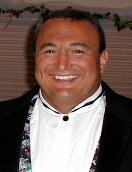

Chris Vasilios Giannaras

Family * Education * Employment History
Hobbies * Personal Achievements * Future
Family
Chris Vasilios Giannaras was born in 1963 in Delaware. His parents are Vasilios and Demetra. Chris has two brothers, one older, and one younger, . Chris married Nichole JoAnne DeAngelo in 1989. They have two children, Nicholas Joseph and Alexander John.
Education
Chris attended Carrie Downie Elementary, Gunning Bedford Middle, and William Penn High schools. He was an honor student and participated in football. He graduated high school in June, 1981 with a class rank of 9 out of 625. Chris then attended the University of Delaware where he graduated in May, 1986 with a Bachelors degree in Biology and a minor in Chemistry.
Employment History
After graduation he moved to Springfield, Virginia and was employed as an Environmental Chemist. He moved to Hunt Valley, Maryland and is currently employed at SciTech Services working on Aberdeen Provoing Grounds doing air monitoring for chemical warfare agents.
Hobbies
Chris has many likes. He enjoys playing with his two sons and is very involved with their lives. He is an avid Philadelphia Eagles and Baltimore Ravens fan and enjoys all types of music. In high school he began woodworking and lifting weights. Currently he enjoys working on computers and creating web pages.
Personal Achievements
Chris has been an owner, along with his brothers, of two restaurants. One was Surf's Up Family Restaurant in Dewey Beach, Delaware and the other was Curly's in Elkton, Maryland. He is currently the vice-president of operations of Apollo Entertainment, a high quality disc jockey service. Together with his cousin, , they have built Apollo Entertainment into the Baltimore-Washington areas finest disc jockey service.
Future
Future plans include making Apollo Entertainment into the areas dominant entertainment service, bringing the highest quality to the art of disc jockey entertainment. He also plans on developing his computer skills, including web page design and network management.